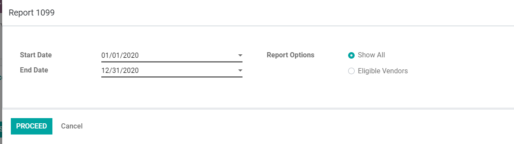
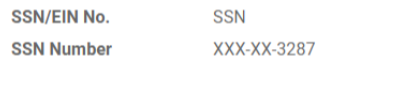

<div class="container">
    <div class="oe_styling_v8">
        <section class="oe_container">
            <div class="mt64 mb64 pt32">
                <h2 class="oe_slogan"
                    style="color: #000;font-family: Roboto,serif;font-weight: 500;text-align:center;text-transform: uppercase;">
                    1099 Report (Odoo Enterprise)
                </h2>

                <h4 class="oe_slogan"
                    style="color: #000;font-family: Roboto,serif;font-weight: 500;text-align:center;text-transform: uppercase;">
                    Filing 1099 tax forms now easier!
                </h4>

                <h5 class="oe_slogan">
                    <p>For companies located in The United States, providing the 1099 income statement is an imperative. For
most companies who rely heavily on external vendors, reporting payments to the Internal Revenue
Service (IRS) as a 1099-MISC form is an extremely critical yet tedious task.
                    </p><br/>

                    <p>
                        Companies need to provide this form to pay contract workers or non-employees with a payment of $600
or more. The 1099 income statement in extremely important to report tax information for their services
rendered during a calendar year.

                    </p> <br/>
                    <p>
                        We at Bista have this process of filing the 1099-MISC forms simpler for you.
                    </p>

                </h5>
            </div>
        </section>
        <section class="oe_container">
            <div id="bista_tabs" class=""
                 style="padding:64px 0;margin: 100px 0;background-color:#F0F4F7;">
                <ul role="tablist" class="nav nav-tabs justify-content-center"
                    data-tabs="tabs"
                    style="border: none;background: unset;">
                    <li class="nav-item active"
                        style="border-top-right-radius: 6px;border-top-left-radius: 6px;background: linear-gradient(to top, #FDB525, #FDB525);margin-right: 1px;padding-bottom: 2px;">
                        <a id="features-tab" href="#bista_features"
                           data-toggle="tab"
                           class="nav-link active" role="tab"
                           style="font-family: Roboto,serif;text-transform: uppercase;font-weight: 600;font-size: 15px;letter-spacing: 1px;padding: 10px 20px;border-top-left-radius: 5px;border-top-right-radius: 5px;color: #2b2b2b;">Features
                        </a>
                    </li>
                    <li class="nav-item"
                        style="border-top-right-radius: 6px;border-top-left-radius: 6px;background: linear-gradient(to top, #FDB525, #FDB525);margin-right: 1px;padding-bottom: 2px;">
                        <a id="screenshots-tab" href="#bista_screenshots"
                           data-toggle="tab"
                           class="nav-link" role="tab"
                           style="font-family: Roboto,serif;text-transform: uppercase;font-weight: 600;font-size: 15px;letter-spacing: 1px;padding: 10px 20px;border-top-left-radius: 5px;border-top-right-radius: 5px;color: #2b2b2b;">Screenshots
                        </a>
                    </li>
<!--                    <li class="nav-item"-->
<!--                        style="border-top-right-radius: 6px;border-top-left-radius: 6px;background: linear-gradient(to top, #FDB525, #FDB525);margin-right: 1px;padding-bottom: 2px;">-->
<!--                        <a id="video-tab" href="#bista_video" data-toggle="tab"-->
<!--                           class="nav-link" role="tab"-->
<!--                           style="font-family: Roboto,serif;text-transform: uppercase;font-weight: 600;font-size: 15px;letter-spacing: 1px;padding: 10px 20px;border-top-left-radius: 5px;border-top-right-radius: 5px;color: #2b2b2b;">Video/Blog-->
<!--                        </a>-->
<!--                    </li>-->
                </ul>
                <div id="bista_tabs_content_ept" class="tab-content"
                     style="background: #fff;border-radius: 10px;padding: 2%;margin: 0 2%;padding-top:4%;">
                    <!-- Features Tabs -->
                    <div class="tab-pane active" id="bista_features"
                         role="tabpanel" aria-labelledby="features-tab">
                        <div class="container">
                            <section id="other-legal-references">
                                <h3 class="text-center alert"
                                    style="font-family: Roboto,serif;font-weight:500;color: #000;background: #F0F4F7;border-radius: 10px;">
                                    Basic Features:
                                </h3>
                                <p>
                                Keeping in mind the criticality of your accounting needs, we have designed a module in Odoo that allows
you to -
                                </p>
                                <ul>
                                    <li>
                                        <i class="fa fa-check text-primary"></i>Tag vendors as 1099 suppliers in Odoo 1099 tax form
                                    </li>
                                    <li>
                                        <i class="fa fa-check text-primary"></i>Manage all payments made to these vendors and even classify it by transactions.
                                    </li>
                                    <li>
                                        <i class="fa fa-check text-primary"></i>Identify which transactions are 1099 eligible and which ones excluded.
                                    </li>

                                    <li>
                                        <i class="fa fa-check text-primary"></i>Record income type by transaction
                                    </li>
                                    <li>
                                        <i class="fa fa-check text-primary"></i>Record federal tax classification.
                                    </li>
                                    <li>
                                        <i class="fa fa-check text-primary"></i>Encrypt and store Social Security Numbers (SSN) and Employer Identification Number (EIN) of your vendors securely and limit access to authorized users only..
                                    </li>
                                    <li>
                                        <i class="fa fa-check text-primary"></i>Export the report and print directly into the 1099 form from Odoo 1099 tax form.
                                    </li>


                                </ul>
                            </section>
                            <div class="row">
                                <div class="col-md-12 mb-5">
                                   
                                </div>
<!--                                <div class="col-md-12 mb-4">-->
<!--                                    
<!--                                         class="mx-auto img img-fluid center-block"/>-->
<!--                                </div>-->
                            </div>
                        </div>
                    </div>
                    <div class="tab-pane" id="bista_screenshots"
                         role="tabpanel" aria-labelledby="screenshots-tab">
                        <section class="oe_container">
                            <div class="alert alert-info">
                                <i class="fa fa-list-ul"></i>
                                <b>Let's see how this can be done:</b>
                            </div>
                            <div>
                                <div class="oe_row oe_spaced">
                                    <div class="oe_centered">
                                        <ul>
                                            <li>
                                                When you search for your vendors or suppliers, our module allows you to classify them by vendor 1099 configuration type using the vendor drop-down in the menu bar.
                                                At year end, you can report accumulated US 1099 payment information to the Internal Revenue Service, other tax agencies, and your suppliers, in standard format.
                                            </li>
                                        </ul>
                                    </div>
                                    <div class="oe_demo oe_picture oe_screenshot">
                                        
                                    </div>
                                </div>
                                <div class="oe_row oe_spaced">
                                    <div class="oe_centered">
                                        <ul>
                                            <li>
                                                Our module even allows you to search your vendors for 1099 by the start and end date of their contract.
                                            </li>
                                        </ul>
                                    </div>
                                    <div class="oe_demo oe_picture oe_screenshot">
                                        
                                    </div>
                                </div>
                                <div class="oe_row oe_spaced">
                                    <div class="oe_centered">
                                        <ul>
                                            <li>
                                                Currently being used by multiple Bista clients across US, our customized module enables you edit income types in a user-friendly interface or directly via reporting. With this module, you can even choose to exclude non-1099 payments from your financial reports to suit your business needs.
A completely secure module, we ensure that the SSN and EIN numbers of each vendor is encrypted and protected from any data theft.

                                            </li>
                                        </ul>
                                    </div>
                                    <div class="oe_demo oe_picture oe_screenshot">
                                        
                                    </div>
                                </div>

                                <div class="oe_row oe_spaced">
                                    <div class="oe_centered">
                                        <ul>
                                            <li>
                                                This Odoo module aims to simplify your tax reporting tasks and tailor them according to your unique needs.
                                                We at Bista are always looking for new ways to solve your complex problems.
                                                We understand that tax filing can be a complicated process, especially when it comes to external vendors who are hired for a short term.
                                                That is why, we are here to help ease this process for you.
                                            </li>
                                        </ul>
                                    </div>
<!--                                    <div class="oe_demo oe_picture oe_screenshot">-->
<!--                                        -->
<!--                                    </div>-->
                                </div>
                                <div class="oe_row oe_spaced">
                                    <div class="oe_centered">
                                        <ul>
                                            <li>
                                                If you are looking for unique solutions to your accounting needs, reach out to us and we will give you a free consultation session suggesting how you can best digitalize your business needs..
                                            </li>
                                        </ul>
                                    </div>
<!--                                    <div class="oe_demo oe_picture oe_screenshot">-->
<!--                                        -->
<!--                                    </div>-->
                                </div>
                                <br/>
                                <br/>
                                <br/>
                                <br/>
                                <br/>

                            </div>
                        </section>
                        <section class="oe_container oe_dark">
                            <div class="oe_row oe_spaced">
                                <div class="oe_centered">
                                    <p>
                                        <B>We at Bista understand how important
                                            your finance needs are, which is
                                            why no specific configuration is
                                            required
                                            to enable this feature, all you
                                            have to do is to download it!
                                            <br/>Reach out to us if you have
                                            any queries.</B>
                                    </p>
                                </div>
                            </div>
                        </section>
                    </div>
<!--                    <div class="tab-pane" id="bista_video" role="tabpanel"-->
<!--                         aria-labelledby="video-tab">-->
<!--                        <div class="container mb32">-->
<!--                            <hr style="border-top: 1px solid #eee;margin: 5px 0;padding: 0;">-->
<!--                            <div style="padding: 10px 15px;">-->
<!--                                <a href="https://www.bistasolutions.com/resources/blogs/odoo-11-accounting-nsf-check-module/"-->
<!--                                   style="color: #000;" target="_blank">-->
<!--                                    <p class="mb0" style="">-->
<!--                                        <span>BLOG</span>-->
<!--                                    </p>-->
<!--                                </a>-->
<!--                            </div>-->
<!--                            <hr style="border-top: 1px solid #eee;margin: 5px 0;padding: 0;">-->
<!--                            <div style="padding: 10px 15px;">-->
<!--                                &lt;!&ndash;                        <iframe width="560" height="315" src="https://www.youtube.com/embed/w4jUb8dniW0" frameborder="0"&ndash;&gt;-->
<!--                                &lt;!&ndash;                                allow="accelerometer; autoplay; encrypted-media; gyroscope; picture-in-picture"&ndash;&gt;-->
<!--                                &lt;!&ndash;                                allowfullscreen>&ndash;&gt;-->
<!--                                &lt;!&ndash;                        </iframe>&ndash;&gt;-->
<!--                                <a href="https://www.youtube.com/watch?v=bqwdsFTmwb0"-->
<!--                                   style="color: #000;" target="_blank">-->
<!--                                    <p class="mb0" style="">-->
<!--                                        <span>Watch Video Tutorial</span>-->
<!--                                    </p>-->
<!--                                </a>-->
<!--                            </div>-->
<!--                        </div>-->
<!--                    </div>-->
                </div>
            </div>
        </section>
        <section class="oe_container">
            <div class="row mb64"
                 style="display: block;margin: 0 auto;width: 100%;text-align: center;">
                <div class="mt32" style="display: inline-block;margin:0 10px;">
                    <a href="https://www.bistasolutions.com/contact-us/contact-form/"
                       target="_blank"
                       style="font-family: 'Montserrat',serif;">
                        <h4 class="mt16 mb0"
                            style="padding: 16px 45px;font-family:'Montserrat',serif;text-transform: uppercase;background: linear-gradient(to right, #FDB525, #FDB525);text-align: center;box-shadow: 2px 1px 12px 3px #ece6e6;border-radius: 10px;color: #fff;font-weight: 700;">
                            Contact Us
                        </h4>
                    </a>
                </div>
            </div>
        </section>
    </div>
</div>